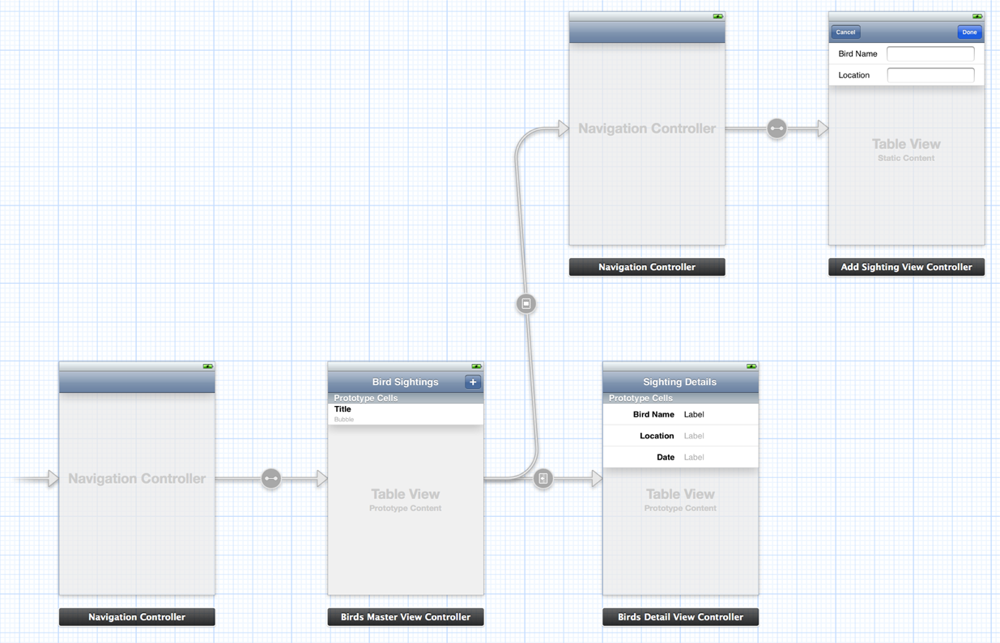

iOS 视图控制器编程指南：在应用程序中使用视图控制器
记录关于学习过的 iOS 文档
在应用程序中使用视图控制器
无论你是使用 iOS 提供的视图控制器，还是创建自定义控制器显示应用程序的内容，实际上都是使用相同的技术集合操作视图控制器。
最常用的操作视图控制器的技术在故事板内部。故事板内的视图控制器让你直接建立在应用程序内的视图控制器之间的关系而不需要写代码。你可以见到控制的流程－从应用程序第一次运行时已创建的控制器中，控制器会响应用户的操作进行实例化。iOS 负责管理大多数这些视图控制器实例化的管理只有需要时才实例化。
有时你可能需要以 allocation 和 initializing 的编程方式创建视图控制器。当直接操作视图控制器时，你必须写实例化控制器，配置它，和显示它的代码。
在故事板中操作视图控制器
图 2-1 展示一个故事板的例子。这个故事板中包含视图控制器，关联的视图，和建立视图之间关系的连接箭头。实际上，这个故事板描述了，从一个场景开始，响应用户的操作显示其它场景。
图 2-1 故事板保存视图控制器的集合和相关联的对象

故事板可以指定一个视图控制器为初始视图控制器。如果故事板通过用户界面部分表现特定的工作流程，那么初始视图控制器代表工作流程的第一个场景。
你可以在故事板中建立建立初始图控制器到其它视图控制器的关系。反过来说，你也可以建立这些视图控制器到其它控制器的关系，最终将大部分或所有故事板的场景连接为单连通图。你建立的关系类型决定已连接的视图控制器什么时候通过 iOS 实例化，有以下方面：
- 如果关系是 segue，那么当 segue 被触发时目标视图控制器会被实例化。
- 如果关系表现为包含，那么当父辈实例化时子视图控制器会被实例化。
- 如果控制器不是目标视图控制器或其它的子控制器，那么它永远不会自动实例化。你必须从故事板以编程方式实例化它。
需要标识故事板内部特定的视图控制器或 segue，可以使用界面构造器为它分配一个唯一标识 (identifier) 的标识字符串。若要从故事板以编程方式加载视图控制器，也必须为它分配一个标识。同样，要以编程方式触发 segue，也必须分配标识。当 segue 触发后，segue 的标识会传递到源视图控制器，用它来判断哪个 segue 被触发了。为了这些原因，请考虑为每个 segue 分配一个标识。
当你使用故事板构建应用程序时，你可以使用单个故事板保存它的所有视图控制器，或者你可以创建多个故事板并在每一个中实现用户界面的一部分。在应用程序中几乎总会有一个故事板本指定为主故事板。如果是主故事板，iOS 会自动加载它；其它故事板必须明确地由应用程序加载。
主故事板初始化应用程序用户界面
主故事板定义在应用程序的 Information property list 文件。如果主故事板已在这个文件中声明，当你的应用程序运行时，iOS 会执行以下步骤：
1.为你实例化窗口。
2.加载主故事板和实例化它的初始视图控制器。
3.分配新的视图控制器到窗口的 rootViewController 属性然后使窗口在屏幕上显示。
在显示之前会调用应用程序委托配置初始视图控制器。 iOS 加载主故事板的完整步骤在 Coordinating Efforts Between View Controllers 中描述。
Segues 自动实例化目标视图控制器
Segue 代表将新视图控制器显示到应用程序用户界面所触发的过渡。
Segue 包含大量有关过渡的信息，包含以下方面：
- 使 segue 被触发的对象，称为 sender
- 开始 segue 的原视图控制器
- 将要实例化的目标视图控制器
- 将要使目标视图控制器显示在屏幕上使用的过渡效果种类。
- 可选的在故事板中指定 segue 标识的标识字符串。
当 segue 触发后，iOS 执行以下动作：
1.使用你在故事板中提供的属性实例化目标视图控制器。
2.给源视图控制器配置新视图控制器的机会。
3.执行在 segue 中配置的过渡效果。
说明：当你实现自定义视图控制器时，每个目标视图控制器都声明了公有属性和方法供源视图控制器使用配置它的行为。作为返回，自定义源视图控制器需要重写由基础类提供的故事板方法配置目标视图控制器。详细的细节在 Coordinating Efforts Between View Controllers 中。
编程方式触发 Segue
Segue 通常由与它关联的源视图控制器对象触发，例如控件或手势检测。Segue 也可以通过应用程序以编程方式触发。只要 segue 已经分配了标识。例如，如果你实现了一个游戏，你可以在比赛结束时触发 segue。然后由目标视图控制器显示比赛的最终分数。
通过调用视图控制器的 performSegueWithIdentifier:sender: 方法以编程方式触发 segue，传入将要触发的 segue 标识。你也可以传入另一个作为发送者的对象。当源视图控制器被调用配置目标视图控制器时，会提供发送者对象和 segue 的标识。
清单 2-1 展示一个触发 segue 的方法的例子。这个例子是 Creating an Alternate Landscape Interface 中的一部分。在这个简短的部分中，你可以看到视图控制器接收到一个方向通知。当视图控制器为纵向模式时和设备旋转成横向时，这个方法使用 segue 在屏幕上呈现不同的视图控制器。因为在这个案例中的通知对象没有对执行 segue 命令提供有用的信息，视通控制器使它自己作为发送者 (sender)。
清单 2-1 编程方式触发 segue
1 | - (void)orientationChanged:(NSNotification *)notification { UIDeviceOrientation deviceOrientation = [UIDevice currentDevice].orientation; if (UIDeviceOrientationIsLandscape(deviceOrientation) && !isShowingLandscapeView) { [self performSegueWithIdentifier:@"DisplayAlternateView" sender:self]; isShowingLandscapeView = YES; } // Remainder of example omitted. } |
如果 segue 只能以编程方式触发，你应该直接绘制一个直接连接箭头从源视图控制器到目标视图控制器。
以编程方式实例化故事板的视图控制器
你可能想以编程方式实例化视图控制器不使用 segue。但是故事板仍然是有利用价值的，因为你可以使用它配置视图控制器的属性以及它的视图层次结构。不管怎么，如果你以编程方式实例化视图控制器，你不用给定任何的 segue 行为。要显示视图控制器，你必须实现额外的代码。因为这个原因，你应该首先使用 segue 并且只有需要时才使用编程方式。
这里是你的代码需要实现的步骤：
1.获取故事板对象 (一个 UIStroyboard 类的对象)。
如果你已经拥有来从同一个故事板实例化的视图控制器，可以读取它的 storyboard 属性取回故事板。要加载不同的故事板，调用 UIStroyboard 类的类方法 storyboardWithName:bundle:，传递故事板文件的名称和可选的包参数。
2.调用故事板对象的 instantiateViewControllerWithIdentifier: 方法，传入你在界面构造器创建的视图控制器的标识。
另外，你也可以使用 instantiateInitialViewController 方法实例化在故事板中的初始视图控制器，不需要知道它的标识。
3.通过设置它的属性配置新视图控制器。
4.显示新视图控制器。见 Displaying a View Controller’s Contents Programmatically。
清单 2-2 展示这个技术的一个例子。它从已存在的视图控制器中取回故事板并使用它实例化新的视图控制器。
清单 2-2 实例化同一个故事板中的另一个视图控制器
1 | - (IBAction)presentSpecialViewController:(id)sender { UIStoryboard *storyboard = self.storyboard; SpecialViewController *svc = [storyboard instantiateViewControllerWithIdentifier:@"SpecialViewController"]; // Configure the new view controller here. [self presentViewController:svc animated:YES completion:nil]; } |
清单 2-3 展示了另一个频繁用到的技术。这个例子加载新的故事板和实例化它的初始视图控制器。它使用这个视图控制器作为放置在拓展显示器的新窗口的根视图控制器。要显示这个方法返回的窗口，在应用程序调用窗口的 makeKeyAndVisible 方法。
1 | - (UIWindow*) windowFromStoryboard: (NSString*) storyboardName onScreen: (UIScreen*) screen { UIWindow *window = [[UIWindow alloc] initWithFrame:[screen bounds]]; window.screen = screen; UIStoryboard *storyboard = [UIStoryboard storyboardWithName:storyboardName bundle:nil]; MainViewController *mainViewController = [storyboard instantiateInitialViewController]; window.rootViewController = mainViewController; // Configure the new view controller here. return window; } |
过渡到新的故事板需要编程途径
segue 只连接保存在同一个故事板的场景。需要从另一个故事板显示视图控制器，你必须明确加载故事板文件并实例化它内部的视图控制器。
这里不是需要你在应用程序中创建多个故事板。在少数情况下，多个故事板可能对你来说很有用：
- 你有一个很大的编程团队，由不同的团队处理不同的用户界面部分。这种情况下，每个故事板属于一个子团队可以限制操作特定的故事板内容的团队成员人数。
- 你购买或创建预定义视图控制器类型的集合的库，这些视图控制器的内容定义在库提供的故事板中。
- 你需要在拓展屏幕显示的内容。这种情况下，你可以在一个单独的故事板内部保持与另一个屏幕关联的所有视图控制器。相同情况下另一种模式是自定义 segue。
容器自动实例化它们的子级
当容器在故事板中实例化后，它的子级同时自动实例化。子级必须被同时实例化给内容控制器一些内容显示。
同样，如果被实例化的自己也是容器，那么它的子级也会被实例化，等等，直到没有新的控制器形成这种容纳关系。如果位于标签栏控制器内部的导航控制器的内部的内容控制器，当标签栏实例化后，这三个控制器会同时实例化。
容器和它的子级在你的视图控制器被调用配置它们之前实例化。你的源视图控制器 (或应用程序委托) 可以依靠所有的子级被实例化。这个实例化行为是非常重要的，因为你的自定义配置代码很少配置容器。相反，它配置通过配置内容控制器附加到容器中。
实例化非故事板的视图控制
要以编程方式创建非故事板的视图控制器，需要以 Objective－C 代码分配和初始化视图控制器。你抛弃了使用故事板的好处，意味着你需要实现额外的代码配置和显示新的视图控制器。
使用编程方式显示视图控制器的内容
要使视图控制器的内容变为有用，它需要显示在屏幕上。这里有几种方式显示视图控制器的内容：
- 使视图控制器成为窗口的根视图。
- 使它成为可见容器视图控制器的子级。
- 从另一个可见的视图控制器呈现它。
- 使用弹出呈现它 (只在 iPad 有效)。
在上面的所有案例中，需要将视图控制器分配到其它对象－窗口，视图控制器，或弹出控制器。这些对象调整视图控制器的视图并添加它到属于它的视图层次结构中使它可以显示。
清单 2-4 展示一个常用案例，分配了一个视图控制器到窗口。这段代码假设故事板没被使用，因此它执行与操作系统代替你完成的相同的步骤：创建窗口并设置新视图控制器作为根视图控制器。然后使窗口可见。
清单 2-4 安装视图控制器作为窗口的根视图控制器
1 | - (void)applicationDidFinishLaunching:(UIApplication *)application { UIWindow *window = [[UIWindow alloc] initWithFrame:[[UIScreen mainScreen] bounds]]; levelViewController = [[LevelViewController alloc] init]; window.rootViewController = levelViewController; [window makeKeyAndVisible]; } |
重要说明：永远不要直接安装视图控制器的视图到视图层次结构。若正确的显示和管理视图，系统会记录每个你显示的视图 (和与它关联的视图控制器)。它会将这些信息在以后对你的应用程序报告控制器相关的事件。例如，当设备的方向更改时，窗口使用这些信息找出最前面的视图控制器并对它通知更改。如果你以其它手段添加视图控制器的视图到层次结构中，系统可能会错误的处理这些事件。
如果你是实现自己的自定义容器控制器，在你添加其它视图控制器的视图到你的视图层次结构时，应该首先创建父－子关系。这样可以确保事件正确发出。见 Creating Custom Container View Controllers。
系列文章
iOS 翻译 《View Controller Programming Guide for iOS：Introduction》
iOS 翻译 《View Controller Programming Guide for iOS：View Controller Basics》
iOS 翻译 《View Controller Programming Guide for iOS：Using View Controllers in Your App》
iOS 翻译 《View Controller Programming Guide for iOS：Creating Custom Content View Controllers》
iOS 翻译 《View Controller Programming Guide for iOS：Resource Management in View Controllers》
iOS 翻译 《View Controller Programming Guide for iOS：Responding to Display-Related Notifications》
iOS 翻译 《View Controller Programming Guide for iOS：Resizing the View Controller’s Views》
iOS 翻译 《View Controller Programming Guide for iOS：Using View Controllers in the Responder Chain》
iOS 翻译 《View Controller Programming Guide for iOS：Supporting Multiple Interface Orientations》
iOS 翻译 《View Controller Programming Guide for iOS：Coordinating Efforts Between View Controllers》
iOS 翻译 《View Controller Programming Guide for iOS：Enabling Edit Mode in a View Controller》
iOS 翻译 《View Controller Programming Guide for iOS：Creating Custom Segues》
iOS 翻译 《View Controller Programming Guide for iOS：Creating Custom Container View Controllers》